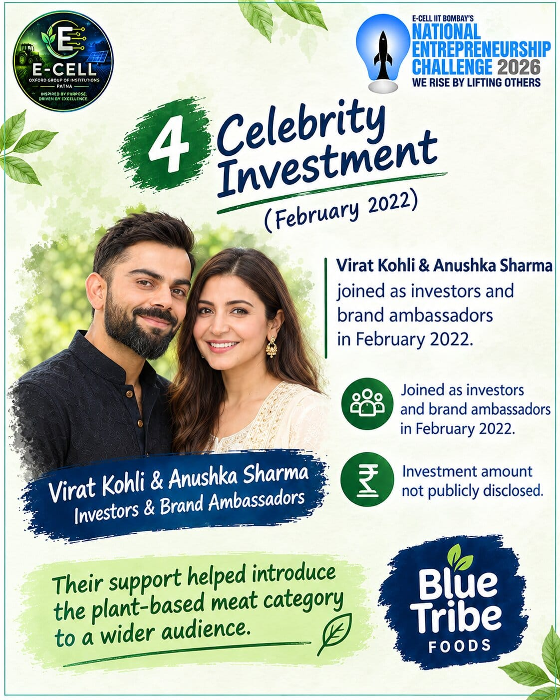
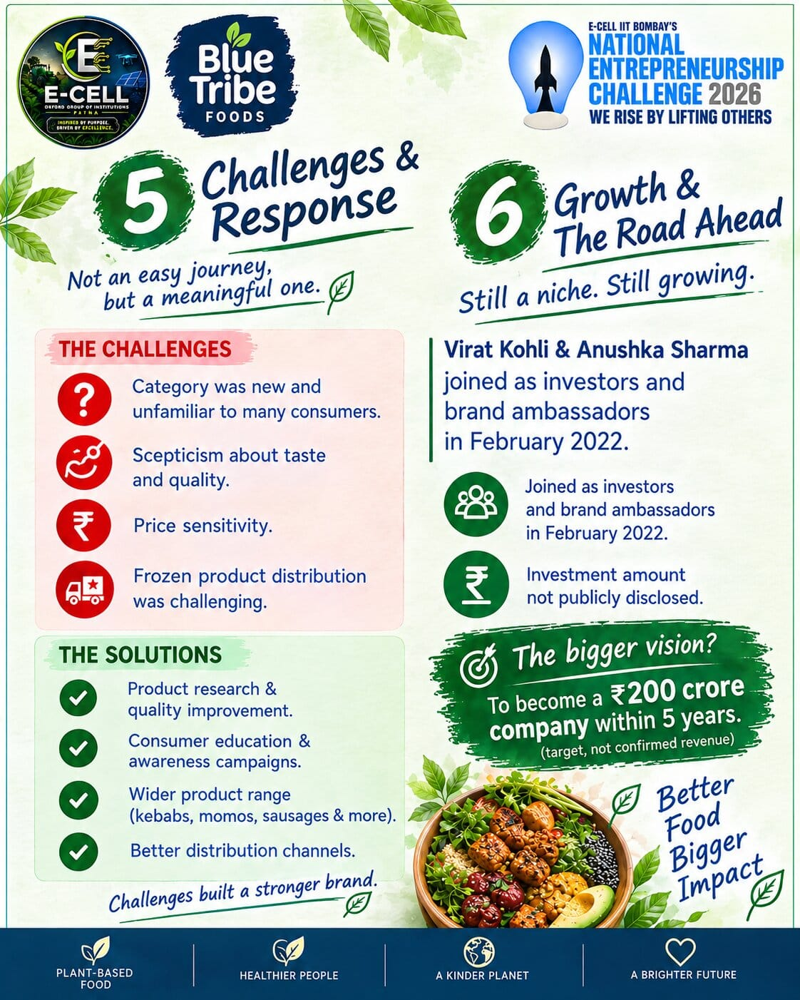

Blog 02 : Sandeep Singh and Nikki Arora Singh





Date : 13/Aug/2026
- Slide 1 (Cover): THE JOURNEY OF BLUE TRIBE FOODS. A tagline "From a simple idea to a plant-based revolution". Show a box of Plant-Based Chicken Nuggets with a bowl of nuggets and ketchup. Include logos for "E-Cell Oxford Group of Institutions" and "E-Cell IIT Bombay's National Entrepreneurship Challenge 2026".
- Slide 2 (The Idea): Title "1 The Idea (2019)". founders Sandeep Singh and Nikki Arora Singh. They founded it to bring the taste of meat from plants. Include a quote: We wanted to create food that’s good for you, kind to animals and better for the planet.
- Slide 3 (How It Works): How It Works. Show bowls of soy, peas, and grains. Icons for "100% Plant-Based", "No Animal Ingredients", "Rich in Protein", "Good for You & The Planet". Tagline: "Same great taste. No animal meat."
- Slide 4 (Products): A grid of 6 food photos: Nuggets, Mince/Keema, Sausages, Momos, Kebabs, Soya Chaap. Tagline: "Tasty. Nutritious. 100% Plant-Based."
- Slide 5 (Celebrity Investment): Celebrity Investment (February 2022). Virat Kohli and Anushka Sharma.They joined as investors and brand ambassadors. Note: "Investment amount not publicly disclosed." Include a logo for Blue Tribe Foods.
- Slide 6 (Challenges & Growth): Challenges & Response for challenges (skepticism, price, distribution) and green checkmarks for solutions (R&D, education, wider range). Right side "6 Growth & The Road Ahead" with a target icon and text: "To become a ₹200 crore company within 5 years." Bottom banner: "Plant-Based Food | Healthier People | A Kinder Planet | A Brighter Future".